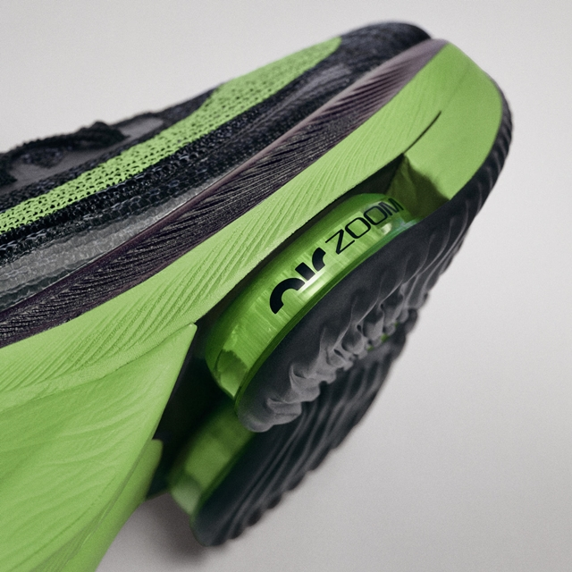
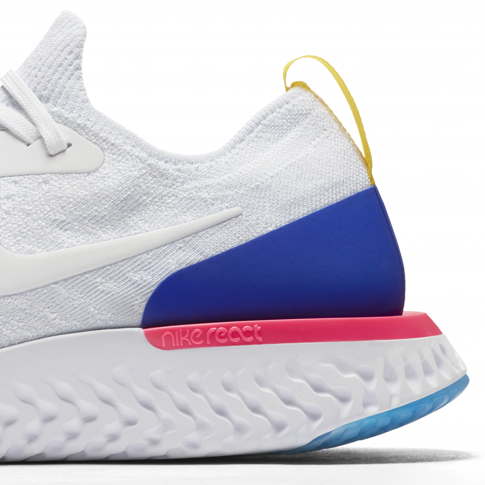
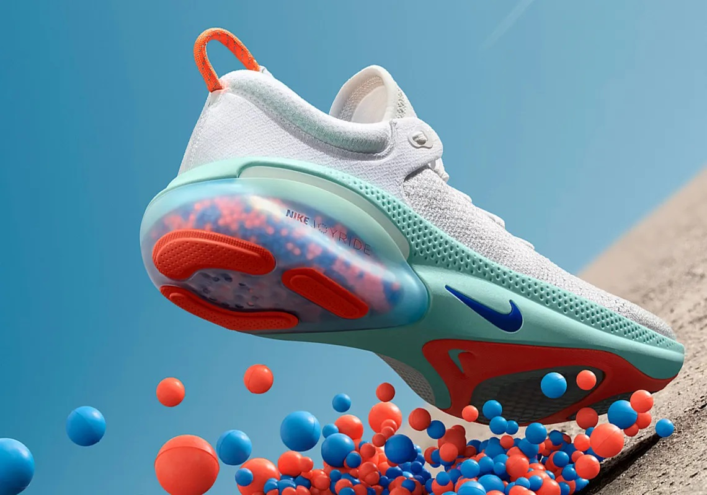
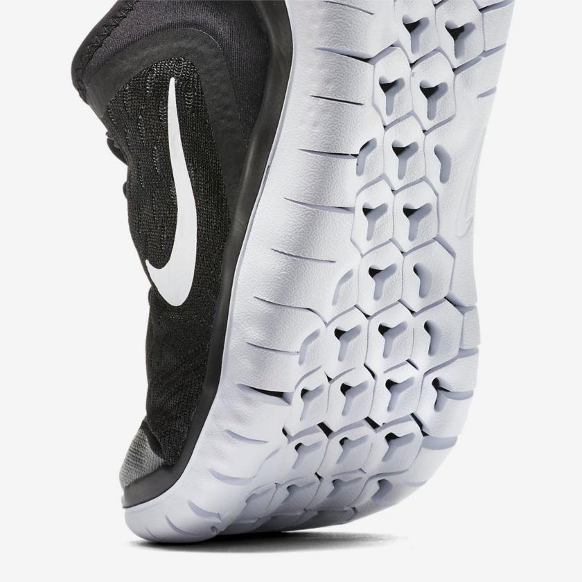

ZoomX
Es una espuma ultraligera y reactiva que se utiliza en las zapatillas más rápidas y avanzadas de Nike. Esta tecnología ofrece una mayor devolución de energía y una menor pérdida de fuerza en el impacto, lo que se traduce en una mayor velocidad y eficiencia.
Air Zoom
Consiste en unas cámaras de aire que se colocan en la entresuela de las zapatillas, ofreciendo una amortiguación sensible y de perfil bajo. Esta tecnología permite una mayor capacidad de respuesta y rebote en cada zancada, favoreciendo los movimientos rápidos y la transición anatómica.
React
Es una espuma innovadora que ofrece una amortiguación elástica y estable. Esta tecnología se caracteriza por su gran capacidad de absorber el impacto y liberar la energía, proporcionando un impulso adicional al corredor. Además, la espuma React es muy duradera y se adapta a diferentes condiciones y terrenos.
Joyride
Es un sistema de amortiguación que consiste en miles de microesferas de TPE (un material sintético) que se distribuyen en cápsulas en la suela de las zapatillas. Estas microesferas se comprimen y se expanden con cada pisada, ofreciendo una amortiguación personalizada y dinámica. Además, la tecnología Joyride ayuda a aliviar la presión en las articulaciones y a mejorar la recuperación muscular.
Free
Diseñada para permitirte una mayor libertad de movimientos, adaptándose a ese movimiento natural de los pies en cada pisada. La rigidez de la espuma de la mediasuela se apoya sobre una suela exterior con ranuras flexibles, realizadas a láser, y así favorecer dicho movimiento natural del pie.
Lunar
Es una espuma suave y flexible que se adapta al pie y ofrece una amortiguación equilibrada y duradera. Esta tecnología combina la ligereza y la resistencia, y ayuda a reducir la fatiga muscular y el riesgo de lesiones.